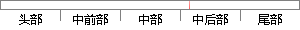

单高斯分布模型的几何意义：单高斯分布模型在二维空间近似于椭圆，在三维空间上近似于椭球，因为在很多场合下，同一类别的样本点并不满足“椭圆”分布的特性。
片段位置图

相似结果|
相似片段 1：高斯分布模型。从几何上讲，单高斯分布模型在二维空间应该近似于椭圆，在三维空间上近似于椭球。然而在很多分类问题中，属于同一类别的样本点并不满足“椭圆”分布的特性。这就引入了高斯混合模型GMM。GMM概率模型
相似片段 2：概率密度函数中，可以通过函数值是否大于某阈值来判断样本x是否属于该类。从几何上看高斯分布模型在平面空间近似于椭圆，在三维空间上近似于椭球。在很多分类问题中，同一类别样本点往往不满足“椭圆”分布的特性，因此本论文采用高斯混合模型来描述样本的概率分布结构。
相似片段 3：(3．19)qb，当概率大于一定闽值时我们就认为X属于C类。从几何上看，单高斯分布模型应该近似于椭圆在在二维空间下，在三维空间则近似椭球。可是在众多分类问题中，同属于一个类别的样本点并无法满足“椭圆”的分布
相似片段 4：2.3.3 高斯混合模型算法单高斯分布模型在二维平面的形状近似于椭圆，拓展到三维空间上则应该近似于椭球。但是对于某些具体的分类问题，被归纳到同一类别的样本点并不符合椭形分布的特征，这些特征很难用单一
|
※ 片段修改建议 ※
近似词参考：- 模型：模子
- 几何：多少
- 模型：模子
- 因为：由于
- 很多：良多 许多 不少 得多
- 场合：场所
- 同一：统一
- 类别：种别
- 别的：此外 另外 其它 其余
- 并不：其实不
- 分布：散布 漫衍
- 特性：特征
系统自动生成语句：单高斯散布模子的多少意义：单高斯散布模子在二维空间近似于椭圆，在三维空间上近似于椭球，由于在良多场所下，统一种别的样本点其实不满足“椭圆”散布的特征。
注：本片段修改建议为系统自动生成，仅供参考。